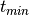
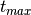
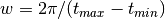

Lomb-Scargle Periodogram¶
One of the best known methods for detecting periodicity in time series is the
Lomb-Scargle Periodogram. gatspy has three main implementations of the
classic periodogram:
LombScargleFast- This class implements the fast, O[N logN] implementation of Lomb-Scargle. It is much faster than any of the above methods, especially as the number of data points and frequencies increases. It is limited to a floating mean model, and the frequencies must be computed on a regular grid.
LombScargle- This basic method uses simple linear algebra to compute the periodogram. Though it is relatively slow, the approach allows for some enhancements such as floating mean, multiple Fourier terms, and regularization terms.
LombScargleAstroML- This class depends on the Lomb-Scargle implementation in
astroML. This is a cython implementation, and
is slightly faster than
LombScargle, though it does not handle higher-order fits or regularization.
For the basic no-frills Lomb-Scargle algorithm, the best option to use is
LombScargleFast. Keep in mind that aside from
options used at model instantiation, the API of the three is identical.
API of Periodic Models¶
The periodogram models here follow in the vein of the scikit-learn API, which makes clear the separation between several parts of the problem:
- the choice of model: this happens at class instantiation.
- the fitting of the model to data: this happens with the
fit()method. - the application of the model to new data: this happens with the
predict()method. - the evaluation of the model fit: this happens with the
score()method.
The models in gatspy differ from those in scikit-learn in several
important ways:
- The
fit()method optionally accepts errors in the magnitude inputs. For multiband methods, the fit method also accepts a specification of the filter/band in which the magnitude is observed. - The
predict()andscore()methods require specification of a period. If this period is not supplied, the best period will be found automatically via an exhaustive grid search, which can be very slow for some datasets!
We’ll see examples of this below.
Basic Lomb-Scargle Periodogram¶
We’ll start by looking at the basic Lomb-Scargle Periodogram, using the
LombScargleFast model.
Let’s start by loading one r-band RR Lyrae lightcurve using the
gatspy.datasets.fetch_rrlyrae() function:
>>> from gatspy import datasets, periodic
>>> rrlyrae = datasets.fetch_rrlyrae()
>>> lcid = rrlyrae.ids[0]
>>> t, mag, dmag, filts = rrlyrae.get_lightcurve(lcid)
>>> mask = (filts == 'r')
>>> t_r, mag_r, dmag_r = t[mask], mag[mask], dmag[mask]
Given this data, we’d like to find the best period with the periodogram.
This can be done using the find_best_period method of any of the above
estimators, once the period_range attribute of the optimizer is set
(see discussion below).
Let’s quickly demonstrate this with LombScargleFast.
Because our data is from an RR Lyrae star, we’ll set a conservative period
range of 0.2 to 1.2 days to make sure it contains the true period:
>>> model = periodic.LombScargleFast(fit_period=True)
>>> model.optimizer.period_range = (0.2, 1.2)
>>> model = model.fit(t_r, mag_r, dmag_r)
Finding optimal frequency:
- Estimated peak width = 0.00189
- Using 5 steps per peak; omega_step = 0.000378
- User-specified period range: 0.2 to 1.2
- Computing periods at 69190 steps
Zooming-in on 5 candidate peaks:
- Computing periods at 995 steps
>>> print("{0:.6f}".format(model.best_period))
0.614317
The periodogram optimizer uses a two-step grid search, first searching a relatively coarse grid to find several candidate frequencies, and finally zooming-in on these to compute the observed period to high precision. Let’s see how close this period is to the period measured by Sesar 2010 using template fits:
>>> metadata = rrlyrae.get_metadata(lcid)
>>> true_period = metadata['P']
>>> print("{0:.6f}".format(true_period))
0.614318
The two periods differ to about  days, or approximately one tenth
of a second. To see more about what is going on in the periodogram, let’s plot
the Lomb-Scargle periodogram as a function of period:
days, or approximately one tenth
of a second. To see more about what is going on in the periodogram, let’s plot
the Lomb-Scargle periodogram as a function of period:
(Source code, png, hires.png, pdf)
{kind=link}
{kind=link}
We see here why so many steps are needed to find the optimal period: the width of each of these peaks is so small that a coarser grid might easily miss a significant peak!
The Lomb-Scargle model is essentially a least squares fit of a single sinusoid
to the data; we can see the model fit using the predict method of the
periodic model:
>>> import numpy as np
>>> tfit = np.linspace(0, model.best_period, 4)
>>> model.predict(tfit)
array([ 17.03381525, 17.02560232, 17.37830128, 17.03381525])
Let’s take a look at this model plotted over the phased data:
(Source code, png, hires.png, pdf)
{kind=link}
{kind=link}

The model is clearly not a good fit for the data (RR Lyrae are much more complicated than a simple sine wave!) but the model serves a useful purpose: it gives us an accurate period determination.
Configuring the Optimizer¶
Finding the best period requires use of an optimizer. For typical optimization problems, this is done using some sort of automated minimization scheme such as gradient descent, or perhaps via a Bayesian sampling scheme such as MCMC. Unfortunately, these typical methods fail because there are so many peaks in the periodogram frequency. Typically periodogram studies fall back on a brute force search grid, finding the grid point which maximizes the power/score.
A brute force search has two parameters that must be specified: the range of the grid, and the step spacing of the grid.
The range of the grid must be chosen based on your intuition about the data. Often people wrongly think they can use some sort of Nyquist-type limit to choose a search range (i.e. evaluating based on the minimum or mean time between subsequent observations); unfortunately this line of reasoning does not apply, even approximately, to unequally-spaced observations. This can’t be stressed enough, as such misuse of Nyquist-type arguments comes up often in the literature: The periodogram of an unequally-spaced time series is generally sensitive to periods far smaller than the minimum time between observations. Thus the search range is an entirely free parameter, which must be set by the user based on intuition about the data.
The spacing of the grid is easier to determine automatically. The grid spacing must be much smaller than the width a typical periodogram peak, or you risk entirely missing peaks within the scan. The typical width of a periodogram peak is inversely proportional to the range of the data; that is, if the first observation is at  and the last observation is at , then the peak width in frequency is approximately . The grid should be chosen such that multiple grid poins cover each potential peak, so we need to choose an oversampling factor (say, 5) and compute the grid based on this.
We can see all of this in play when we ask the model for the best period.
Since we’re looking at RR Lyrae which have typical periods of around 0.5 days,
we’ll choose a range around this.
Note that the units of period_range should match the units of the times
passed to the fit() algorithm. Here the input times are in days, so the
period_range is specified as (min_period, max_period) in days:
>>> model = periodic.LombScargleFast(fit_period=True)
>>> model.optimizer.period_range = (0.2, 1.2)
>>> model = model.fit(t_r, mag_r, dmag_r)
Finding optimal frequency:
- Estimated peak width = 0.00189
- Using 5 steps per peak; omega_step = 0.000378
- User-specified period range: 0.2 to 1.2
- Computing periods at 69190 steps
Zooming-in on 5 candidate peaks:
- Computing periods at 995 steps
These values can be adjusted via the optimizer argument to the model; this
can be done either at or after instantiation. After instantiation is the
preferred pattern for the default optimizer:
>>> model = periodic.LombScargleFast(fit_period=True)
>>> model.optimizer.set(period_range=(0.5, 0.7), first_pass_coverage=10)
>>> model = model.fit(t_r, mag_r, dmag_r)
Finding optimal frequency:
- Estimated peak width = 0.00189
- Using 10 steps per peak; omega_step = 0.000189
- User-specified period range: 0.5 to 0.7
- Computing periods at 18979 steps
Zooming-in on 5 candidate peaks:
- Computing periods at 495 steps
Before you do any period optimization, be sure to set these quantities appropriately! And note that becuase the grid spacing is equal in frequency, probing small periods is much more expensive than probing large frequencies.